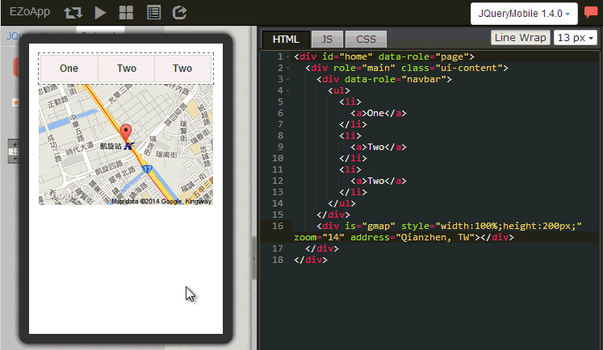
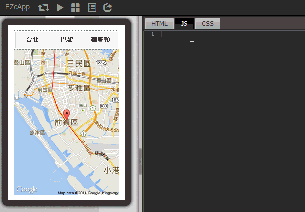

Google 地图是目前世界上最好用的开放地图信息平台，也是目前最多人使用的地图，举凡网页、导航、Android、iOS...等各式各样的 Device 都会见到 Google 地图的身影。
但很可惜的，对于不会撰写程序的人而言，要在自己的网页内加上一个地图，简直会要了他的命，不过如果这时候他用了 EZoApp，他的这条命就整个保住了！( 好冷 XD ) EZoApp 的 3rd Party 组件，当中就有一个名为 gmap 的组件供大家使用，搭配 EZo 研发团队的语法，用户只需要写三行，共不到一百个字母的程序代码，就可以翘着二郎腿捻着胡须观赏自己做出来的地图，这种心情真是无法想象的愉悦呀！ 虽然 EZoApp 已经是非常的方便使用，在制作之前，仍然必须要求大家要有一点点的 HTML 和 CSS 基础，毕竟在一些排版上，还是需要用到相关的基础知识喔！
接下来就让我来用最快的速度来介绍这个最快可以写好的地图程序吧！打开 EZoApp！Let’s Go！
范例链接：
结合 JavaScript 应用 - Google 地图应用

navber 组件是常用的组件之一，顾名思义就是一个导览页签的组件，这个组件的程序代码也很简单，有几个按钮就有几个 <li><a></a></li>，如果有多个按钮需求的用户，就自行添加就会自动长出按钮。

gmap 组件是 EZo 研发团队 所开发的组件，让用户可以简单迅速的创造地图，使用的方式也相当简单，在组件的面版中，选择 3rd Party 的组件，接着选择 gmap 组件，拖曳进入画面后，进行长宽尺寸的编辑，不过 gmap 组件不只有长宽尺寸的功能，你还可以改变 zoom 的数值控制地图缩放的大小数字越大地图放的越大，也可以由 address 来指定地图置中的地点，是不是相当的方便呢！
<div is="gmap" style="width:100%;height:200px;" zoom="12" address="Qianzhen, TW"></div>
光是放上组件就想要让按钮和地图连动？说真的这实在有点难度，不过 EZoApp 已经帮我们把门坎大大的降低，只要把 navbar 的页签改成都市的名称，然后在 JS 的页签贴上下列这串程序代码，地图就会按照我们点选的都市，跳转到以该都市为中心的地点啰！
$(document).on('pageinit', function () { // 页面开始时要执行的程序
$('#map_btn').on('click', function (e) { // 点下 navbar 按钮时要执行的程序
var addr = $(e.target).text(); // 读取现在按下按钮的都市名称
$('#map').gk('address', addr); // 以该都市为中心点显示在地图上
});
});
但是不要忘记，在 navbar 要加上 id="map_btn"，在地图要加上 id="map"。
<div data-role="navbar" id="map_btn">
<div is="gmap" id="map" style="width:100%;height:450px;" zoom="15" address="Qianzhen, TW"></div>
全部程序代码就只有这样，是不是很简单！编写完成后，按下最上方 preview 的按钮，就可以来测试效果如何啰！

范例链接：
结合 JavaScript 应用 - Google 地图应用